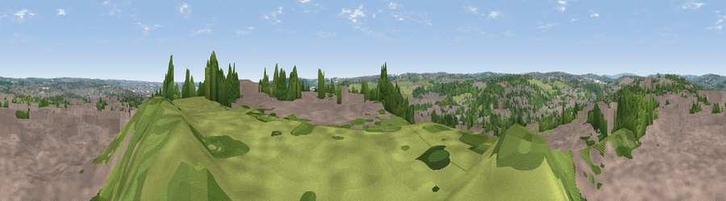

Viewpoint near Churwell
#38988 in England · top 83% of its area beats it · near Churwell · access?Where it is
The exact computed spot (SE 26425 32775). Click the marker for map links.
Public access: no public right of way or access land is recorded at this exact spot — it may be on private land. Computed from Natural England's CRoW access layer and OpenStreetMap rights of way — not the legal definitive map. Always verify locally.
The view, rendered

A 360° render of this exact spot computed from the terrain model, tree cover and land cover — summer colours, afternoon light, calibrated against photographs of famous viewpoints. Real trees, hedges and buildings will differ in detail.
The panorama
Grey silhouette: terrain skyline in each direction (720 bearings, Earth curvature and refraction included). Dashed green: skyline with trees (+15 m) and buildings (+8 m) as obstacles. Blue strip: how far the ground is visible on each bearing.
Where the view opens
Wedge length = distance to the farthest visible ground on that bearing (vegetation-aware). Rings at 10, 25 and 50 km.
What fills the view
57% built-up · 26% woodland · 16% grassland ·
Angular shares of the visible panorama (visual magnitude), not map area. Landscape diversity 0.44 (0–1 Shannon).
Key numbers
More beautiful places nearby
The staircase of upgrades: each row has a higher view potential than everything closer. Driving times are estimates from straight-line distance, calibrated against real road routing — check an actual route before setting out.
| Place | Direction | Drive | Score |
|---|---|---|---|
| Viewpoint near Leeds | NE · 5 km | ~11 min | 40.7 |
| Viewpoint near Churwell | SSE · 5 km | ~11 min | 53.9 |
| Viewpoint near Woodkirk | S · 7 km | ~15 min | 62.1 |
| Rawdon Trig point | NNW · 8 km | ~17 min | 69.6 |
| Rawdon Billing | NNW · 8 km | ~17 min | 72.7 |
| Viewpoint near Otley | NNW · 13 km | ~24 min | 77.5 |
| Viewpoint near East Witton | NNW · 54 km | ~75 min | 77.8 |
| Hood Hill | NNE · 54 km | ~76 min | 79.6 |
53.79062, -1.60037 · source: screening · position refined by local search. Computed location — check access rights before visiting.